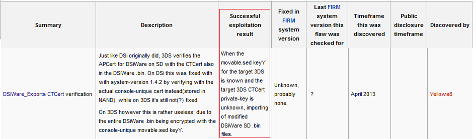
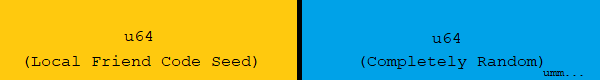
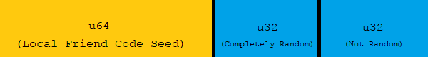
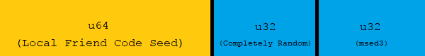

34⅕c3 : EOL is LOL
Presentation by Zoogie
What's this about?
The movable.sed!
Because the movable.sed has such great security characteristics!
What's ...movable.sed?
- 3dbrew
- In short, movable.sed is a file that contains a 128 bit key that's responsible for encrypting everything on the sd card: games, saves, ...dsiware exports
- It's console-unique and stored in the nand until system transfer
- Its purpose is to make it possible to transfer the contents of one 3ds to another without having to redownload/re-encrypt the entire contents of the sd card - hence the "movable" part of its name
What can we do with that key/movable.sed?
Take it away, yls8 ...
- In other words, you can modify game saves, extdata, themes, etc.
- Basically everything on the sd card is fair game
- But I'm sure all you really want to do is modify DSiWare exports
- DSiWare Transfer method on a single system sure sounds nice ...
Sounds good, how do we get it?
- Conventionally, you can get it with a system transfer. Just dump it before the transfer begins and it will be the same on the receiving system
- But that requires a second - and hacked - 3ds :/
- You can also import/export one with arm11 kernel access, but there are no (current firm) k11 sploits public right now, so we have no choice other than to ...
- ... forge ahead dauntlessly!
Anatomy of a movable.sed key Y
Anatomy of a movable.sed key Y
That Local Friend Code Seed (LFCS) sounds familiar...
It is.
And it can be dumped from userland!
and maybe other places ...
Great! Now we can brute-force the last u64!!
- Lol, hell no -
Even with a GPU-accelerated monster machine that can crunch billions of sha256s a second, it would take decades to crack a u64
Oh. So the presentation is over I guess..
( ͡° ͜ʖ ͡°)
Where there's a will, there's a Lenny.
Anatomy of a movable.sed key Y
Anatomy of a movable.sed key Y

Anatomy of a movable.sed key Y

Anatomy of a movable.sed key Y
This not-random number we'll call msed3 (taken from u32 msed[3])was discovered by observing that, among several msed samples, the value never rises above about 32 million. It also seems that the values are sequentially aligned the SOC manufacturing date of the device, maybe msed3 is a serial of sorts?
I searched all over the 3ds nand and various memory regions to find how or where the 3ds possibly uses msed3, to no avail (if you figure this out, dear reader, please tell me or 3dbrew.org)
But that's okay, because this unknown number already holds a dark, very useful secret:
Msed3 appears to be mathematically related to the LFCS!
A self-leaking key, that's what! ^_^
It's true,
all ⅕ of it!

- After making a spreadsheet of several LFCS/msed3 pairs, I noticed there was some sort of ratio going on
- msed3 = ⅕(LFCS) turned out to be that ratio
- ... almost
- But it is actually very close: never more than ±4000 off
- That's accurate to within one-millionth of the random u32 we started with!
- This leaves us with about 2 42 combinations to bf now - getting there!
Fine-Tuning
- ±4000 is great but we want to do better
- On my very average PC, it would take about 20 days to CPU bf 2 42 (~15 minutes for every u32 block x2cores)
- However, writing some code that plots the expected msed3 error using data from many movable.sed nodes, reduces that number down to about ±200
- The more nodes we have the better we can predict the error and speed up brute-forcing. "help wanted" from people with cfw 3ds's to help supply those nodes - a tool to dump this info will be provided
- Implementing GPU bf would be another game changer - I have little experience with GPU coding so "help wanted" for this too
Gimmie bin!
- lol, patience - should be very soon
- Even then, it would be in a very, very beta state
- Really would like to have a GPU BFer done before release, but I can't wait too long now - cat's outta the bag
- When the time comes you will still need: userland entrypoint*, PC (faster the better), and dsiware game
- TADpole for importing modified dsiware exports on PC - check repo for instructions
* maybe. who knows if friend code swapping leaves the LFCS in the other person's 3ds or not (wink, wink) network packets? hmmm ... dunno :)
Dev Notes
(most of you can skip this)
- movable.seds that originate from a new3ds have bitflags set at:
00 00 00 00 02 00 00 00 00 00 00 00 00 00 00 80
- The msed3 new3ds bitflag (80)is not factored into the msed3/LFCS relationship. Same with the one directly after the LFCS.
- For keyY verification during BF, you can use sdmc:/Nintendo 3DS/ID0(32 digit hex)
- This value is the first ½ of the actual sha256 of the KeyY. See here, last paragraph.
- You can dump LFCS with udsGenerateNodeInfo or GetLocalFriendCodeSeed (and certainly others)
- udsGenerateNodeInfo is chosen in my POC because it only uses default *hax services
- udsGenerateNodeInfo also returns a LFCS that needs its high u16 nulled out, msed LFCS doesn't use that at all
- msed3 = ⅕(LFCS) and = ½(deviceID) - it has a similar, but different error margin compared to the msed3/LFCS relationship
- When a 3ds is system transferred, the msed2 of the source system is +2'd.
- When a 3ds is system transferred, the whole msed of the target system becomes that of the source, except for a mystery u32 at 0x120 and the AES-MAC at 0x130. This u32 appears to reflect the +1/+2 "counter" behavior of the msed2. After the first format of the target system after systransfer, the msed will "revert" to its old msed, albeit with the msed2 counter updated.
- When a 3ds is system formatted, the msed2 is +1'd. This leads in nicely to the next little bit...
- There's a very dirty trick to speeding up BFing that I'll uncreatively call "Hash-Clustering". I'm loathe to even mention it because it requires a bunch of extra work for the user (and developer).
- Here it goes: as mentioned, system formats increment the msed2 +1 each format. A new sha256 ID0 is generated as well, of course. If a few of these hashes are gathered via multiple sysformats, one could iterate the BF loop in multiples of <# of hashes> and be guaranteed not to "miss" the hash/keyy match since they are all clustered together. The result is speeding up the process since a hash/keyy comparison is much less expensive than generating a new sha digest for each keyy candidate. Again, forget I even mentioned this - it's clever but not practical.
Thanks
- Joel16 - (code) various friend services, amNetGetDeviceCert, and fileCopy (msed dump) from FriendMii, 3DSident, 3DS-Recovery-Tool respectively
- Yellows8 - (documentation) dsiware exports, movable.sed, 3ds flaws, and countless other pages
- Yellows8 - (code) ctr-dsiwaretool
- d0k3 - adding dsiware export dump support to godmode9. This inspired me to write TADpole, and it was during its development that I noticed the msed vuln
- B9S Team - DSiWare execution wouldn't be that useful if we couldn't sign firms
- Quantumcat - for being a helpful tester cat - with glasses!
- Nintendo - for making a wonderful platform in the 3ds; and for its security, which is wonderful in its own way :3
- Many others I'm sure - just let me know if I left you out